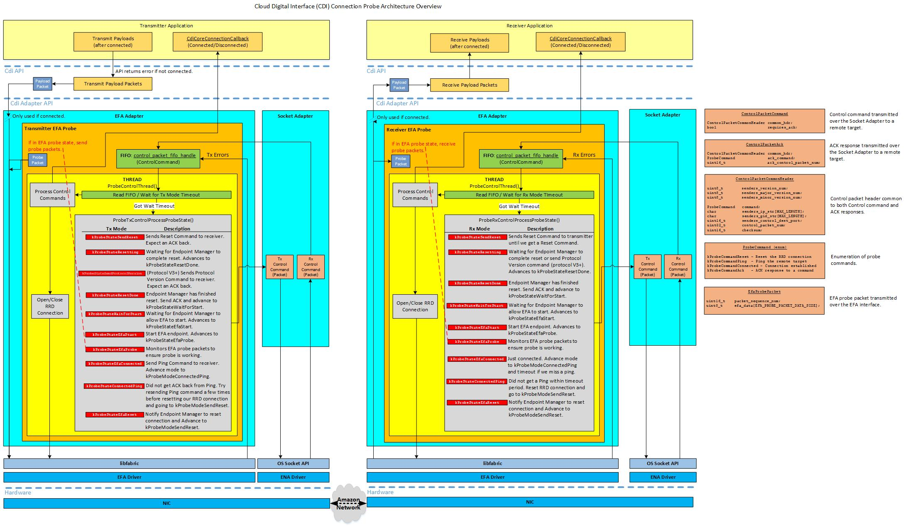

Architecture Overview
In order to establish an SRD connection between two EC2 instances using EFA adapters, a specific sequence of events must occur. The EC2 instance used as a transmitter must obtain an EFA device identifier of the remote EC2 instance in order to establish the EFA connection. Initial startup and optimization of the SRD network flows need to be established before the EFA connection can be used by the application. For this, a socket based interface is used to control communication. All requests contain information about the sender such as CdiProtocolVersionNumber, IP address, port and EFA device identifier. CdiProtocolVersionNumber is used to negotiate compatible probe and CDI-SDK protocols. In order to support legacy protocols, the negotiation process involves multiple steps and is described below:
- Create the socket based control interface. The instances start in kProbeStateIdle and then advance to kProbeStateSendReset.
Transmitter sends reset requests that contain protocol v1.0.x to receiver until an ACK is received. This value is used to allow backwards compatibility with legacy versions of the protocols. For legacy versions of the probe protocol, the value of "x" is ignored. For all other versions:
If the value of "x" (defined by CDI_PROBE_VERSION) is 3 or greater, then the probe protocol supports the new kProbeCommandProtocolVersion command. Otherwise, the legacy protocol v1.0.x is used.
- Once the receiver has received the reset request, non-legacy versions of the probe protocol examine the transmitter's CDI_PROBE_VERSION. If the value is 3 or greater than the ACK response will contain the receiver's CDI-SDK and probe version and wait for the transmitter to send the new kProbeCommandProtocolVersion command. Otherwise, the receiver sets its negotiated protocol to legacy v1.0.x, which will be used for all future probe communication until another reset command is received or the connection is lost. In either case it advances the state to kProbeStateEfaReset, using the Endpoint Manager to reset the local connection. While this is occurring, the state is set to kProbeStateResetting. When complete, the state is set to kProbeStateResetDone, which causes the ACK to be sent back to the transmitter. State then advances to kProbeStateEfaProbe, which is used to transmit several SRD packets over the EFA interface to establish the initial network flows.
Once the transmitter has received the ACK for a reset request, for non-legacy probe protocols the receiver's probe protocol version is evaluated as described below:
If the probe protocol version is 3 or greater, then the state advances to kProbeStateSendProtocolVersion and the kProbeCommandProtocolVersion command is sent to the receiver. After the transmitter receives the ACK for kProbeCommandProtocolVersion, it sets its negotiated CDI-SDK and probe protocol version. Otherwise, the transmitter sets its negotiated protocol to legacy v1.0.x.
- After the transmitter's negotiated protocols have been set, the transmitter then uses the Endpoint Manager to prepare the EFA connection so it can be started. While this is occurring, the state is set to kProbeStateWaitForStart. When complete, the state is set to kProbeStateEfaStart, which causes the connection to be started and begins transmitting SRD probe packets over the EFA interface. State is set to kProbeStateEfaProbe.
- After the desired number of SRD probe packets have been successfully transmitted and confirmed as being received by the receiver, the receiver will advance its state to kProbeStateEfaConnected, invoke the user registered callback function CdiCoreConnectionCallback(), and send kProbeCommandConnected to the transmitter. After the transmitter receives the command, it advances the state to kProbeStateEfaConnected and the user registered callback function CdiCoreConnectionCallback() is invoked.
- While connected, the transmitter will send kProbeCommandPing commands using the control interface to the receiver to ensure both transmitter and receiver are operating correctly. This is done at a regular interval (SEND_PING_COMMAND_FREQUENCY_MSEC). If the transmitter does not receive an ACK back within a timeout period (TX_COMMAND_ACK_TIMEOUT_MSEC), a few more attempts are made. If these attempts fail, the transmitter disables the EFA connection and returns to kProbeStateSendReset state.
NOTE: The user registered callback function CdiCoreConnectionCallback() is invoked whenever the connection state changes (kCdiConnectionStatusConnected or kCdiConnectionStatusDisconnected).
The diagram shown below provides an overview of the connection probe architecture.
